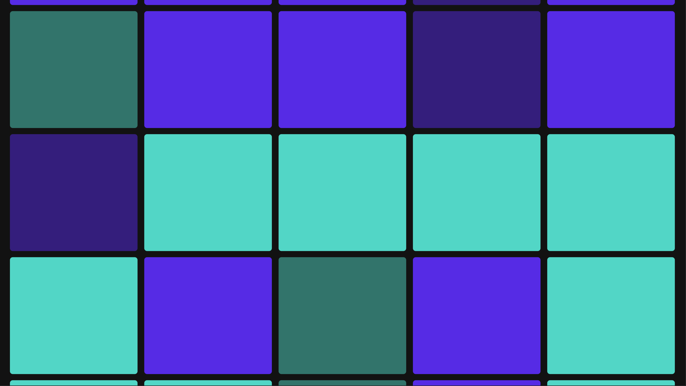

JUSTIN KRAUS
Data engineer and visualization specialist based out of Brooklyn, NY.
Application
Data Viz
-

-

-

-

-

- 
-

-

-
A decade of 311 Calls
311 call volumes between 2010 and 2020

-
Banks in NYC
A breakdown of retail banking across NYC
-
Names in Miles
The people mentioned in the Miles Davis autobiography

-
Pitchfork Between the Lines
A natural language analysis of the artists referenced in Pitchfork reviews

-
Tiny Mix Tapes
Thematic trends in mixtapes
-
WFMU Playlist Analysis
Analysis of the artists and songs played on WFMU